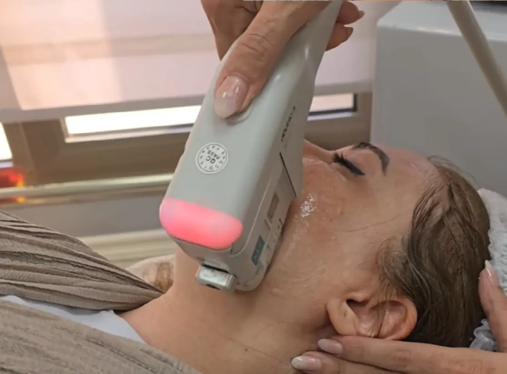
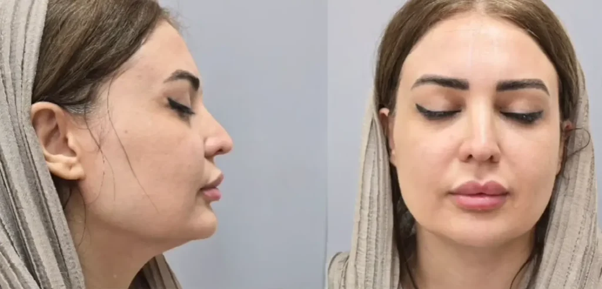
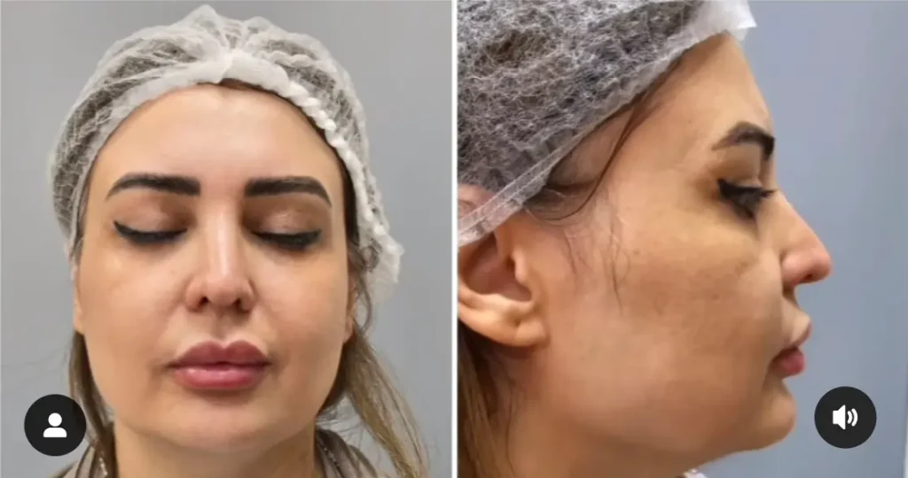

خانه / مجله / جوانسازی پوست
هایفوتراپی صورت، بهترین راه لیفت و جوانسازی صورت

هایفوتراپی صورت چیست؟
هایفوتراپی صورت (HIFU)، که مخفف عبارت "High-Intensity Focused Ultrasound" است، یک روش پیشرفته و غیرتهاجمی برای لیفتینگ و سفت کردن پوست میباشد.
این تکنولوژی از امواج اولتراسوند متمرکز با شدت بالا برای تحریک تولید کلاژن در لایههای عمیق پوست استفاده میکند، که منجر به بهبود قابل توجه در ظاهر چین و چروک، خطوط ریز و افتادگی پوست میشود.
هایفوتراپی به عنوان یک جایگزین ایمن و موثر برای روشهای جراحی لیفتینگ صورت استفاده میشود. همچنین به دلیل عدم نیاز به برش، بیهوشی و دوره نقاهت طولانی، محبوبیت زیادی پیدا کرده است.
هایفوتراپی صورت برای افرادی که به دنبال جوانسازی پوست صورت، گردن و حتی بدن خود هستند، گزینهای ایدهآل محسوب میشود.
هایفوتراپی صورت چگونه است و چطور انجام میشود؟
- در طول جلسه هایفوتراپی جوانسازی صورت، پزشک ابتدا پوست شما را تمیز کرده و ژل مخصوص اولتراسوند را روی ناحیه مورد نظر اعمال میکند.
- سپس، دستگاه هایفو را روی پوست حرکت میدهد و امواج اولتراسوند متمرکز را به لایههای عمیق پوست میفرستد.
- این امواج باعث ایجاد نقاط حرارتی کوچک در عمق پوست میشوند که تولید کلاژن و الاستین را تحریک میکنند.
- نکته: در طول درمان، ممکن است احساس گرما یا سوزش خفیفی داشته باشید، اما این احساس معمولاً قابل تحمل است و پس از درمان از بین میرود.
- کل فرایند هایفوتراپی صورت معمولاً بین 30 تا 90 دقیقه طول میکشد، بسته به وسعت ناحیه تحت درمان.
- پس از درمان، میتوانید بلافاصله به فعالیتهای روزمره خود بازگردید، زیرا هیچ دوره نقاهتی وجود ندارد.

هایفو صورت چند جلسه است؟
- تعداد جلسات هایفوتراپی صورت به عوامل مختلفی بستگی دارد، از جمله:
- وضعیت پوست شما: اگر پوست شما شل و افتاده باشد، ممکن است به بیش از یک جلسه نیاز داشته باشید تا به نتایج مطلوب برسید.
- سن شما: با افزایش سن، تولید کلاژن در پوست کاهش مییابد، بنابراین ممکن است افراد مسنتر به جلسات بیشتری نیاز داشته باشند.
- اهداف شما: اگر به دنبال نتایج قابل توجه و ماندگار هستید، ممکن است به بیش از یک جلسه نیاز داشته باشید.
به طور کلی، اکثر افراد برای دستیابی به نتایج مطلوب به یک تا سه جلسه هایفوتراپی صورت نیاز دارند. جلسات معمولاً با فاصله چند هفته یا چند ماه انجام میشوند تا به پوست فرصت کافی برای تولید کلاژن و بهبودی داده شود.
پزشک شما میتواند با ارزیابی وضعیت پوست و اهداف شما، تعداد جلسات مورد نیاز را تعیین کند. راستی اگر میخاید در میتونید مورد فیشیال و لیزر هم بخونید.
خواص هایفوتراپی صورت؟
«هایفوتراپی صورت» با بهرهگیری از تکنولوژی پیشرفته و غیرتهاجمی، مجموعهای از مزایای چشمگیر را برای جوانسازی و زیباسازی پوست به ارمغان میآورد:
لیفتینگ و سفت کردن پوست: تحریک تولید کلاژن و الاستین منجر به لیفتینگ قابل توجه و سفت شدن پوست صورت و گردن میشود، و ظاهری جوانتر و شادابتر را به شما هدیه میدهد.
کاهش چین و چروک: هایفوتراپی به طور موثر چین و چروکهای سطحی و عمیق را کاهش میدهد و خطوط ریز را بهبود میبخشد، و به پوست شما ظاهری صافتر و یکدستتر میبخشد.
بهبود افتادگی پوست: هایفو صورت به طور قابل توجهی افتادگی پوست در نواحی مانند گونهها، خط فک و گردن را بهبود میبخشد و کانتور صورت را بازسازی میکند.
افزایش الاستیسیته پوست: با تحریک تولید کلاژن و الاستین، انجام هایفوتراپی صورت به افزایش الاستیسیته و انعطافپذیری پوست کمک میکند، و پوستی جوانتر و سالمتر را برای شما به ارمغان میآورد.
بدون نیاز به جراحی و دوره نقاهت: هایفوتراپی یک روش غیرتهاجمی است که نیازی به برش، بیهوشی و دوره نقاهت طولانی ندارد. شما میتوانید بلافاصله پس از درمان به فعالیتهای روزمره خود بازگردید.
نتایج طبیعی و ماندگار: نتایج هایفوتراپی صورت طبیعی و ماندگار هستند و میتوانند تا چندین ماه یا حتی سالها ادامه داشته باشند، بسته به شرایط پوست و سبک زندگی شما.
با توجه به این مزایا، هایفوتراپی صورت به عنوان یک روش درمانی ایمن، موثر و محبوب برای جوانسازی پوست شناخته میشود و میتواند به شما کمک کند تا به ظاهری جوانتر و شادابتر دست یابید، بدون نیاز به جراحی و عوارض جانبی آن.
راستی این اطلاعات عالی در مورد هایفوتراپی کردن صورت منتشر کرده.
مضرات هایفوتراپی صورت
اگرچه هایفو تراپی صورت به طور کلی یک روش ایمن و کمعارضه محسوب میشود، اما مانند هر روش درمانی دیگری، ممکن است با برخی عوارض جانبی همراه باشد. آگاهی از این موارد به شما کمک میکند تا تصمیمی آگاهانهتر در مورد انجام این روش بگیرید:
- درد و ناراحتی: برخی افراد ممکن است در طول درمان یا پس از آن احساس درد، سوزش یا ناراحتی خفیفی داشته باشند. این عوارض معمولاً موقتی هستند و به سرعت برطرف میشوند.
- قرمزی و تورم: ممکن است پس از درمان، قرمزی و تورم خفیفی در ناحیه تحت درمان مشاهده شود. این عوارض نیز معمولاً ظرف چند ساعت یا چند روز از بین میروند.
- کبودی: در موارد نادر، ممکن است کبودی خفیفی در محل درمان ایجاد شود، به خصوص در افرادی که پوست حساسی دارند. این کبودیها معمولاً ظرف چند روز بهبود مییابند.
- بیحسی یا گزگز: برخی افراد ممکن است پس از درمان احساس بیحسی یا گزگز خفیفی در ناحیه تحت درمان داشته باشند. این عارضه معمولاً موقتی است و ظرف چند هفته برطرف میشود.
در موارد بسیار نادر، ممکن است عوارض جدیتری مانند سوختگی، آسیب عصبی یا عفونت رخ دهد. با این حال، این عوارض بسیار نادر هستند و با انتخاب یک پزشک متخصص و مجرب میتوان خطر بروز آنها را به حداقل رساند.
به یاد داشته باشید برای انجام هایفو تراپی همیشه می بایست به پزشکان و مجموعه های معتبر مراجعه کنید. با خانم دکتر فریده محمدی در مستقیما در ارتباط باشید.
قبل از انجام هایفوتراپی صورت، حتماً با پزشک خود در مورد سابقه پزشکی خود، داروهایی که مصرف میکنید و هرگونه نگرانی که دارید صحبت کنید. پزشک شما میتواند به شما کمک کند تا تصمیم بگیرید که آیا هایفوتراپی صورت برای شما مناسب است یا خیر و خطر بروز عوارض جانبی را به حداقل برساند.
عوارض هایفوتراپی صورت
همانطور که در قسمت قبل اشاره شد، از عوارض هایفو صورت میتوان به درد و ناراحتی، قرمزی و تورم، کبودی (نادر) و بی حسی و گزگز اشاره کرد که همگی موقتی هستند.

مراقبت های بعد از هایفو تراپی صورت
پس از انجام هایفو تراپی صورت، رعایت برخی نکات مراقبتی به حفظ نتایج درمان و تسریع بهبودی پوست کمک میکند:
- استفاده از کمپرس سرد: در صورت احساس درد یا تورم، میتوانید از کمپرس سرد برای کاهش التهاب و تسکین درد استفاده کنید.
- آبرسانی پوست: استفاده از مرطوبکنندههای ملایم و آبرسان به حفظ رطوبت پوست و تسریع بهبودی کمک میکند.
- محافظت از آفتاب: استفاده از کرم ضد آفتاب با SPF بالا برای محافظت از پوست در برابر اشعههای مضر خورشید ضروری است.
- پرهیز از محصولات تحریککننده: از استفاده از محصولات حاوی الکل، عطر و مواد شیمیایی قوی که ممکن است پوست را تحریک کنند، خودداری کنید.
- اجتناب از حرارت: از قرار گرفتن در معرض حرارت زیاد، مانند سونا، جکوزی یا حمام داغ، برای چند روز پس از درمان خودداری کنید.
- ماساژ ملایم: ماساژ ملایم صورت میتواند به بهبود گردش خون و تسریع بهبودی کمک کند.
- رعایت بهداشت: پوست خود را تمیز و خشک نگه دارید و از دست زدن به ناحیه تحت درمان با دستهای آلوده خودداری کنید.
- مراجعه به پزشک: در صورت بروز هرگونه عارضه غیرمعمول یا نگرانی، به پزشک خود مراجعه کنید.
با رعایت این نکات مراقبتی ساده، میتوانید از نتایج هایفوتراپی صورت خود لذت ببرید و پوستی جوانتر، شادابتر و سالمتر داشته باشید. همچنین انجام فیشیال تخصصی بعد از هایفو میتونه خیلی موثر باشه.
هزینه هایفو صورت چقدر است
هزینه هایفو تراپی صورت میتواند تحت تأثیر عوامل مختلفی مانند ناحیه تحت درمان، تعداد جلسات مورد نیاز، تخصص پزشک و موقعیت جغرافیایی کلینیک قرار گیرد.
به طور کلی، هزینه هایفوتراپی صورت در مقایسه با جراحیهای زیبایی بسیار مقرون به صرفهتر است.
با این حال، در این مجموعه، ما به ارائه خدمات با کیفیت بالا و در عین حال مقرون به صرفه برای شما متعهد هستیم.
ما معتقدیم که زیبایی و جوانی حق همه است و نباید با هزینههای گزاف همراه باشد.
برای اطلاع از هزینه دقیق هایفوتراپی صورت در مجموعه ما و بهرهمندی از تخفیفات ویژه، کافیست فرم زیر را پر کنید تا کارشناسان ما در اسرع وقت با شما تماس بگیرند و اطلاعات لازم را در اختیارتان قرار دهند.
سوالات متداول هایفو صورت
هایفوتراپی با تحریک تولید کلاژن و الاستین، باعث لیفتینگ و سفت شدن پوست، کاهش چین و چروک، بهبود خطوط ریز و افزایش الاستیسیته پوست میشود.
ماندگاری هایفوتراپی صورت به عوامل مختلفی بستگی دارد، اما به طور کلی نتایج آن میتوانند تا چندین ماه یا حتی سالها ادامه داشته باشند.
عوارض هایفوتراپی صورت معمولاً خفیف و موقتی هستند و شامل درد، قرمزی، تورم، کبودی و بیحسی میشوند. عوارض جدی بسیار نادر هستند.
هایفوتراپی صورت به جوانسازی و لیفتینگ پوست، کاهش چین و چروک، بهبود افتادگی پوست و افزایش الاستیسیته آن کمک میکند.
خطرات هایفوتراپی صورت بسیار کم است، اما در موارد نادر ممکن است عوارض جدیتری مانند سوختگی یا آسیب عصبی رخ دهد. انتخاب یک پزشک متخصص و مجرب میتواند این خطرات را به حداقل برساند.
خیر، هایفوتراپی صورت تأثیری بر لاغری صورت ندارد. این روش درمانی بر روی لایههای عمیق پوست تمرکز دارد و باعث تحریک تولید کلاژن و الاستین میشود که به سفت شدن و لیفتینگ پوست کمک میکند، نه لاغری آن.